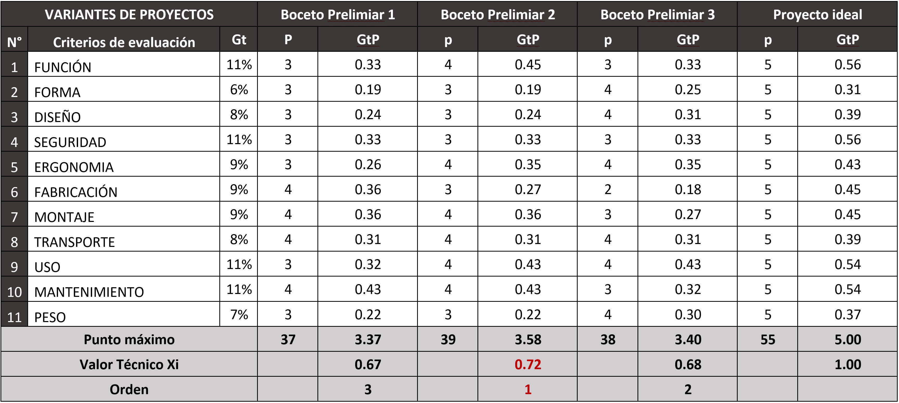

Deterioro del desarrollo Conductual/Emocional.
La deficiencia de hierro y la falta de vitamina B12 en niños están vinculados con problemas de conducta. Los niños son uno de los grupos más vulnerables de padecer anemia, debido al rápido período de crecimiento cerebral, en especial durante los dos primeros años de vida. La anemia produce alteraciones a nivel general del individuo. Estas alteraciones cerebrales se reflejan a largo plazo en un retraso del desarrollo mental y físico de los niños, así mismo, en el aspecto conductual y emocional. Es probable que los efectos sobre la conducta y el desarrollo en los niños anémicos se vean aumentados por la presencia de factores desfavorables para un normal desarrollo. Según un estudio liderado por la universidad de Michigan estos factores incluirían comportamientos como la ansiedad y depresión que se manifiestan como agresividad y romper las reglas [20]. Estos comportamientos no deseados y problemas de conducta tienen un impacto no solo dentro de cada hogar, sino también en las escuelas, y posiblemente, con el tiempo, generen algún tipo de problema social mayor.
Por otro lado, un estudio en China diferenció efectos según sexo en la manifestación conductual a los seis años, los niños tenían más problemas de atención, mientras que las niñas presentaron mayor agresión. Este es un ejemplo que los efectos que produce la anemia no necesariamente son los mismos y que varía según el sexo e incluso entre los intervalos de edad que los niños presentan. [18]
En la siguiente tabla se puede observar los porcentajes de nivel de agresividad que presentan los niños, clasificado por sexo y edad. Estos cuadros no se encuentran vinculados estrictamente con la anemia, puesto que consideran otros factores externos. Debido a la poca investigación en este aspecto esta información solo nos puede servir de referencia.
Al crecer un niño con niveles de agresión altos es probable que un futuro pueda cometer actos de vandalismo o de violencia. Por tal motivo, se presenta el siguiente cuadro que nos brinda información de los diferentes tipos de violencia que actualmente presenta nuestra sociedad en los que podrían estar involucrados los jóvenes que conductas violentas por anemia, pero esto no quiere decir que toda la data a continuación sea estrictamente de personas anémicas.